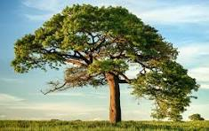

Objetivo
Esta página tiene como objetivo recopilar imágenes que celebran la belleza de la fauna y flora de nuestro planeta Tierra
Tambien es importante resaltar que la fauna y flora son vitales para el equilibrio de los ecosistemas y la supervivencia de la humanidad.
Proporcionan una gran variedad de bienes y servicios ambientales, desde alimentos y agua hasta medicinas y materiales de construcción.
Además, son esenciales para la regulación del clima, la polinización de cultivos y la purificación del agua y el aire